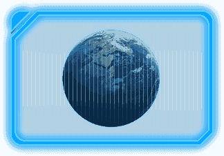

<!doctype html>
<html lang="en">
<head>
    <meta charset="UTF-8">
    <meta name="viewport"
          content="width=device-width, user-scalable=no, initial-scale=1.0, maximum-scale=1.0, minimum-scale=1.0">
    <meta http-equiv="X-UA-Compatible" content="ie=edge">
    <title>详情页</title>
    <link rel="stylesheet" href="css/swiper-4.3.3.min-b.css">
    <link rel="stylesheet" href="css/common.css">
    <link rel="stylesheet" href="css/details.css">


</head>
<body>
<div id="dv">
    <!--行星名字-->
    <div class="top">
        
        <!--  -->
        
    </div>
    <!--内容-->
    <div class="swiper-container" id="swiper-container1">
        <div class="swiper-wrapper">
            <!--介绍-->
            <div class="swiper-slide" id="introduce">
                <!-- template1 -->
            </div>
            <!--构造-->
            <div class="swiper-slide" id="structure">
                <!-- template2 -->
            </div>
            <!--图、内容-->
            <!-- <div class="swiper-slide">
                <div class="picContent">
                    
                    <p>
                        地球的结构存在不同的圈层，分为地球外圈和地球内圈两大部分。整个地球总共包括八个圈层，其中岩石圈、软流圈和地球内圈一起构成了所谓的固体地球。地球外圈中的大气圈、水圈和生物圈，以及岩石圈的表面，一般用直接观测和测量的方法进行研究。
                    </p>
                </div>
            </div> -->
        </div>
        <!-- 导航按钮 -->
        <div class="swiper-button-prev"></div>
        <div class="swiper-button-next"></div>
    </div>
    <!-- 缩略图 -->
    <div class="swiper-container" id="swiper-container2">
        <div class="swiper-wrapper">
            <!-- <div class="swiper-slide"></div> -->
    </div>

</div>
</body>
<script src="js/jquery.min.js"></script>
<script src="js/swiper-4.3.3.min.js"></script>
<script src="js/common.js"></script>
<script src="js/showAll.js"></script>
<script src="https://img.hcharts.cn/highcharts/highcharts.js"></script>
<script src="https://img.hcharts.cn/highcharts/modules/exporting.js"></script>
<script src="https://img.hcharts.cn/highcharts-plugins/highcharts-zh_CN.js"></script>

<!-- 基本参数 -->
<div id="template1" style="display: none">
    
    <div class="picShow">
        <div>天文符号</div>
        <p>$p1$</p>
        <p>$p2$</p>
        <p>$p3$</p>
        <p>$p4$</p>
    </div>
</div>
<!-- 大气及内部构成 -->
<div id="template2" style="display: none">
    <div class="structureLeft">
        <div class="structureTop"></div>
        <p>内部结构</p>
        <div class="structureBottom"></div>
        
    </div>
    <div class="structureRight">
        <div class="structureTop"></div>
        <p>大气成分</p>
        <div id="container"></div>
    </div>
</div>
<!-- 详细介绍 -->
<div id="template3" style="display: none">
    <div class="swiper-slide">
        <div class="picContent">
            
            <p>$content$</p>
            <audio src="$audio$"></audio>
        </div>
    </div>
</div>
<!-- 缩略图 -->
<div id="template4" style="display: none">
    <div class="swiper-slide">
        
    </div>
</div>
<div id="template5" style="display: none">
    <div class="swiper-slide">
        
    </div>
    <div class="swiper-slide">
        
    </div>
</div>

<script src="js/details.js"></script>

</html>